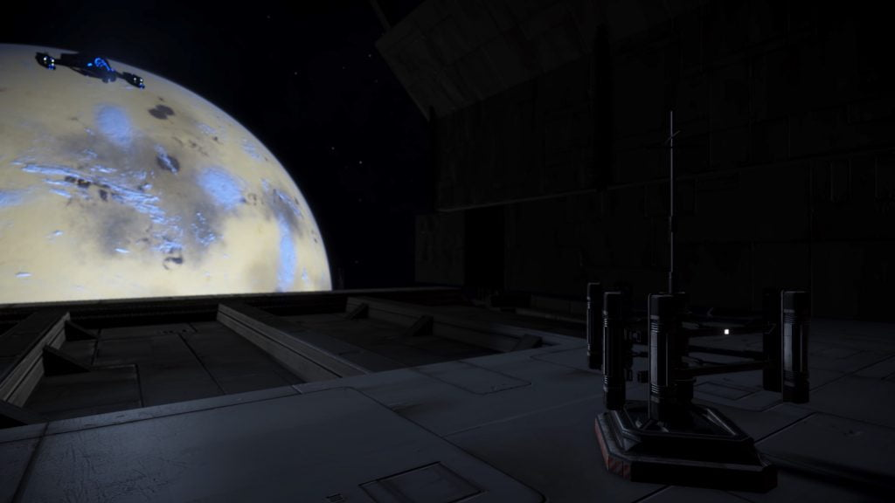

Communication Hub Zeta 12 is an installation that can be found in the Electra system, orbiting body 4.
The installation is designated as a Communication Hub, however, use caution when dropping out of supercruise, as you will often immediately collide with the structure. Full shields are recommended.
After a short period at the facility, two Elite Diamondback Explorers with unusual designations such as SVI-022B may jump in and attack.
The existence of this installation was hinted by the logs at Relay Station PSJ-17, and revealed by the nearby listening post:
LISTENING POST SIGNAL DATA
…Transmission Detected Gamma Level Encryption POT-008-0…
No Matching Signals Detected.
Control, this is maintenance team 372. There is no hardware or software issue with the listening post. That signal we’re picking up is not coming from here.
Whatever it is it’s piggybacking inside the main comms network.
All I can say for certain is that we don’t know what it is, but with some analysis we might be able to pin point where it’s originating from.
Sending data to network station in Electra.
…Signal Lost…

Two Satellites giving Engineer Data are adjacent to the facility. A series of four Ship Log Uplink points can be located on the exterior of the facility, deploy your ship’s hardpoints and use the onboard Data Link Scanner within 200m of each post to scan them and retrieve the logs. In addition to the text, each log is accompanied by an audio recording:
…TECH OFFICER’S LOG 1/4…
This signal is incredible. The behaviour is almost organic.
We can’t isolate it, every time we think it’s gone it shifts to a new frequency band.
If I didn’t know better I’d say it’s…alive, maybe some military experiment. But it’s illegal to hack the public comms network.
I’ve never seen anything like it. I’ve got to get to the bottom of this.
…TECH OFFICER’S LOG 2/4…
It’s not military, at least not our military.
This code might not even be human.
We managed to track it to the point of origin, seems to be coming from a system here in the Pleiades sector.
This is too big for us now. I’ve put in a report to head office, with luck they’ll let us take some credit for the discovery. I mean finding alien life has become a big thing lately, there’s got to be some kind of payout for information like this.
…TECH OFFICER’S LOG 3/4…
They arrived this morning, apparently on company orders to shut us down. They said they were going to make the station fully automated.
This makes no sense. We’ve just stumbled on the discovery of a lifetime and now they want to automate this place!?
Oh, and another thing. They’re armed! Well, some of them at least. They say that head office has sent them here for our protection. Something’s not right here. Every time we ask for details we get the brush off, or just some more vague reasons for them being here.
They’ve taken copies of all our research and wiped any data concerning the signal from our systems. They’re wiping everything!
…TECH OFFICER’S LOG 4/4…
These guys didn’t come from head office. I overheard a conversation between the operation lead and his superiors. They’re some kind of private military outfit. I’ve got to contact someone, ask for help.
I managed to get these logs and some of our data onto a data core. If anything happens to us maybe someone will find it and get the truth out.
I’ve encoded the location data into one of the beacons outside. Should just seem like a stream of numbers if they don’t look too closely. I’ve rigged it to go off at 10 minutes past the hour.
We’ve all been called to the docking bay. They say we’re being sent home, but I don’t believe them for a second. Everyone is really scared.
An Unregistered Comms Beacon can be found adjacent to the facility.
The transmission times of this beacon are 10 minutes past the hour, every hour.
10 14 22 1 4 5 18 19
KLDOIQBKJ KUDOGKKF PBQODL
RBL 19026 PBQD N 1 V
GIQ GKJR
H LIOQBVGDP HBJBHIG
HKAD PQIJA NY
(repeated four times)
The initial numeric sequence decodes by letter positions to:
JNVADERS
Applying a Keyed Caesar cipher to the remainder with the key of INVADERS (assuming an error in the transmission) yielded the message:
OPERATION OVERLOOK SITREP
GIP 19026 SITE B 1 C
LAT LONG
M PARTICLES MINIMAL
MODE STAND BY
This references the location of an inactive Unknown Structure on HIP 19026 B 1 c at -17,9575, -152.6994.
In July 3306 it was found that the message had been changed (seemingly to correct the typo), and also now points to a different Thargoid Structure (also inactive):
9 14 22 1 4 5 18 19
KLDOIQBKJ KUDOGKKF PBQODL
SBL 16572 PBQD I 4 D
GIQ39 GKJR HBJTP 29
H LIOQBVGDP HBJBHIG
HKAD PQIJANY NY
(repeated four times)
Decoding with the key of INVADERS yielded the message:
OPERATION OVERLOOK SITREP
HIP 16572 SITE A 4 E
LAT39 LONG MINUS 29
M PARTICLES MINIMAL
MODE STANDBY BY
This indicates a different site, and now includes the lat and long that were missing the first time.